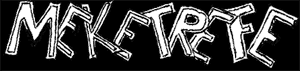
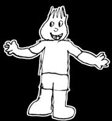
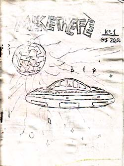

|
 |
| A
primeira coisa que fiz e que pode ser chamada de um projeto criativo e
coerente foi a produção de histórias em quadrinhos. Eu fazia
"revistas" completas, com oito páginas cada, e meu pai fotocopiava e
providenciava a distribuição -- segundo ele, no bar de uma pessoa
conhecida dele. Não sei qual é a veracidade desse pedaço -- nunca estive
no local em que elas eram distribuídas --, mas posso dizer que era um
esquema bem "profissional". Meu pai comprava as edições -- normalmente a tiragem era de dez exemplares -- e pagava o valor cheio para mim. Isso quer dizer que, com a primeira edição de Meketrefe, revista protagonizada pelo personagem de mesmo nome, faturei a pequena fortuna de 200 cruzados. De cabeça, não me lembro em que época foi isso. Entretanto, como as capas das revistas tinham o preço, em cruzados, e pelo menos uma edição teve o preço "corrigido" para cruzados novos, podemos presumir que a produção foi entre 1988 e 1989. Eu tinha, portanto, uns 9 anos quando isso começou.  A despeito de ser uma produção bem crua, foi minha introdução formal ao mundo criativo dos desenhos e dos quadrinhos, e tenho orgulho dela.O desenho ao lado foi tirado de uma das revistas -- este é Meketrefe, um menino alienígena do planeta Meketral, mundo que foi vítima de uma explosão. À la Superman, Meketrefe fugiu para a Terra a bordo de uma nave espacial e, ao chegar aqui, fez sua própria turma de amigos. Seu melhor amigo era Han-Shi, um oriental briguento e mal-humorado que lutava karatê. A mocinha da turma, e paixão de Meketrefe, era Jaqueline. Alfredo era um menino muito distraído e desligado. E o único adulto da turma era Franklin, uma espécie de cientista maluco. Um personagem criado depois, e que não interagia com a turma do Meketrefe, era o Super-Medroso, um menino covarde que adorava super-heróis e cresceu para se tornar um deles. Ele tinha superforça e podia voar (graças ao espírito de uma coruja morta, que decidiu lhe transferir essa capacidade), mas seu medo de tudo prejudicava seu desempenho como herói.  Hoje, tudo que tenho dessas primeiras investidas criativas é uma coleção de revistas fotocopiadas, se apagando lentamente com o tempo, e muitas lembranças legais de produzir esses desenhos.E por que eu coloco isso aqui? Porque ainda não estou pronto para desistir de Meketrefe e sua turma. Estou certo de que, no futuro, esses personagens poderão ressurgir. Aqui está a origem de tudo. |
Copyright © 2007 Salvador Nogueira